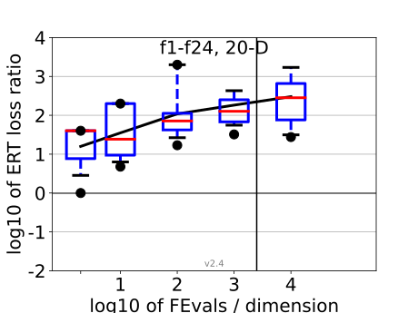
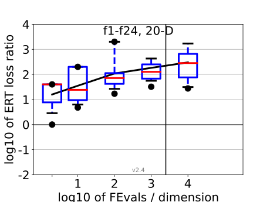

All functions in 5-D and 20-D
f1–f24 in 5-D, maxFE/D=10000
| #FEs/D | best | 10 % | 25 % | med | 75 % | 90 % |
|---|---|---|---|---|---|---|
| RLUS/D | 1e4 | 1e4 | 1e4 | 1e4 | 1e4 | 1e4 |
| 2 | 0.98 | 1.8 | 2.1 | 3.0 | 5.0 | 10 |
| 10 | 2.4 | 3.3 | 3.3 | 4.2 | 5.3 | 14 |
| 100 | 4.2 | 4.8 | 9.3 | 14 | 21 | 88 |
| 1e3 | 17 | 23 | 29 | 60 | 82 | 2.1e2 |
| 1e4 | 0.88 | 7.2 | 24 | 76 | 2.5e2 | 9.1e2 |
| 1e5 | 9.1 | 19 | 46 | 5.1e2 | 1.9e3 | 2.6e3 |
f1–f24 in 20-D, maxFE/D=2500
| #FEs/D | best | 10 % | 25 % | med | 75 % | 90 % |
|---|---|---|---|---|---|---|
| RLUS/D | 2e3 | 2e3 | 2e3 | 2e3 | 2e3 | 2e3 |
| 2 | 1.0 | 2.4 | 7.3 | 40 | 40 | 40 |
| 10 | 4.8 | 6.0 | 8.8 | 24 | 2.0e2 | 2.0e2 |
| 100 | 17 | 25 | 39 | 71 | 1.2e2 | 2.0e3 |
| 1e3 | 32 | 53 | 67 | 1.3e2 | 2.5e2 | 2.4e3 |
| 1e4 | 28 | 31 | 75 | 2.8e2 | 6.6e2 | 2.2e3 |
Separable functions in 5-D and 20-D
Misc. moderate functions in 5-D and 20-D
Ill-conditioned functions in 5-D and 20-D
Multi-modal functions in 5-D and 20-D
Weak structure functions in 5-D and 20-D
ERT loss ratios (see the previous figure for details). Each cross (+) represents a single function, the line is the geometric mean.{kind=link}
{kind=link}
{kind=link}
{kind=link}
{kind=link}
{kind=link}
{kind=link}
{kind=link}
{kind=link}
{kind=link}
{kind=link}